▼ This is the downscaled version of "Better Minecraft" ▼
You can control the player with WASD
Not public yet!
▼ These are all the "important" projects I made ▼
(The projects don't work on mobile devices.)
Meteorite-Alarm was the first game I've ever made when I was 10 years old. It was in a workshop that my mother booked for me. It was the first time I've ever coded something. I ended the project in Early 2024. I know it's long for such a game but I took long breaks in between for personal reasons. It's a simple javascript game with a spaceship that has to avoid meteorites. The spaceship is controlled with WASD. You can regenerate and use your shield too.
To play it, click here.This was the first website I've ever made (I recently changed it a little, because there were personal informations on it). I coded it in an informatic working-group. Yeah... in german it's just called AG or "Arbeitsgemeinschaft". It's a course for students from students, where they meet together after school so work. In this case it is coding. I coded it with my mentor in Early 2022. It was just a small project so it's not that good but I worked on it for several hours so please be kind. I was jung and I wasn't good. There used to be links to my friends' websites but i can't find them and I doubt that they are still online.There is also the old version of "Meteorite-Alarm" on it. It could be interesting to see how it looked like in the past (little tip: you control the spaceship with the arrow keys).
To see it, click here.This is a project in Three.js (that is a tool in JavaScript to make 3D games). I started it also in Early 2022 in the informatic working-group but it didn't go as well as the AI so it's not finished and I'm not working on it. If you still wanna see how it looks you can click on the link. You should be able to control the player with WASD.
To play it, click here.Better Minecraft is a game I started in Early 2024 to quickly refresh my knowledge about HTML, JavaScript and CSS, because we had it in the informatics-lessons. It slowly got a bigger project than expected so it's not finished yet. In the game you have a Player that you can control with WASD. There are enemies which swords oder bows that want to kill you. It's an infinite world which means that there is no limitation. It's only limited by your GPU and Memory Ressources. I hope you have fun playing it and don't wonder why it's called "Better Minecraft". I don't know ether.
Not public yet!Planet B is a colonization game where you have a planet that you colonize and build your empire. It's a clone of Planet S which isn't that big but it's a cool game for everyone that wants to try. There nothing more to say as the game is still in very early developing.
Not public yet!Game of Life is a clone of the original John Conway's Game of Life. Game of Life was developed in 1970 from John Conway and it's about drawing structures that live and react to each other. It's pretty simple but you can build enormous things. Like I said it's not my game and I just tried to make it in JavaScript.
To play it, click here.I hope this could give you a good look at my programming skills. If you have any questions about any of the projects please contact me!